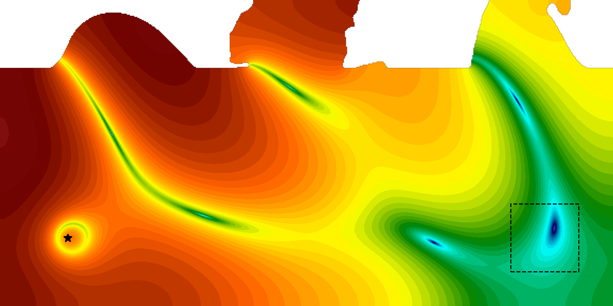
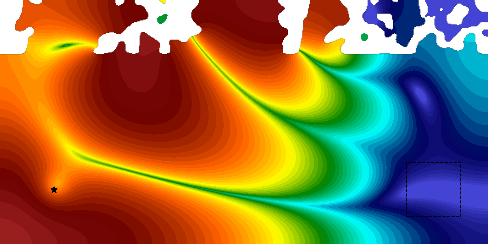
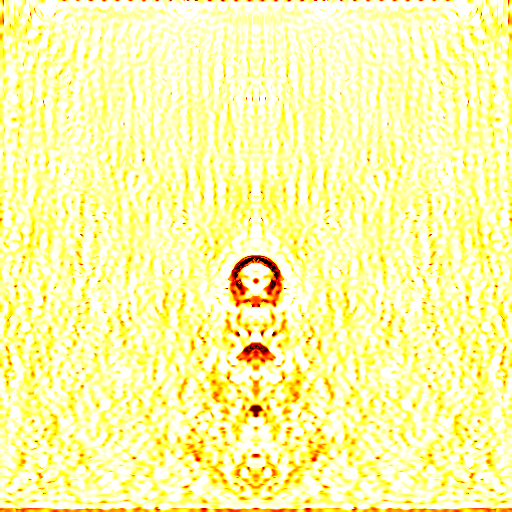
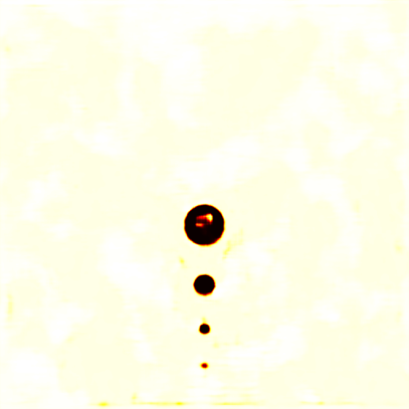
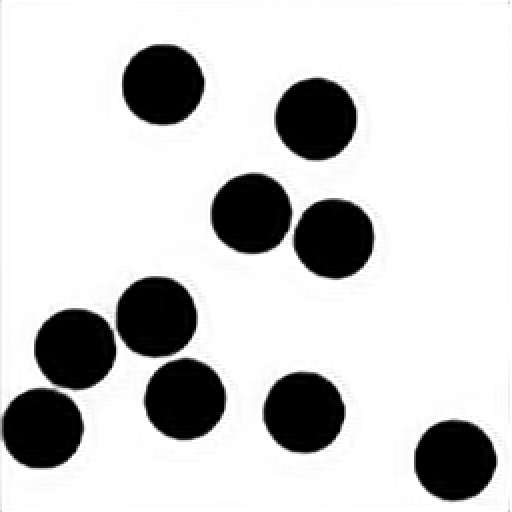
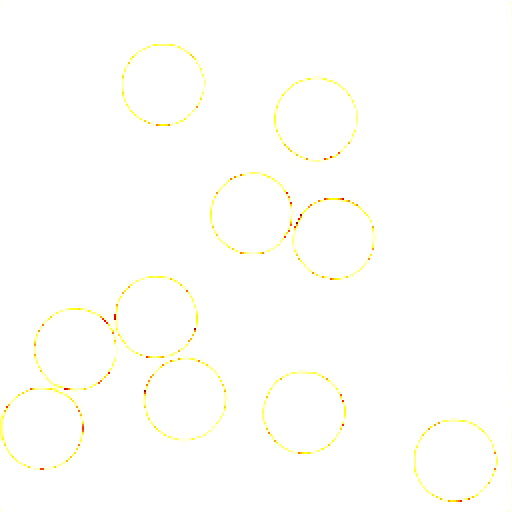
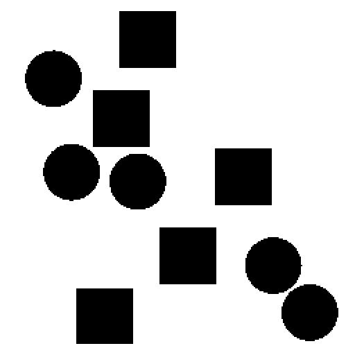
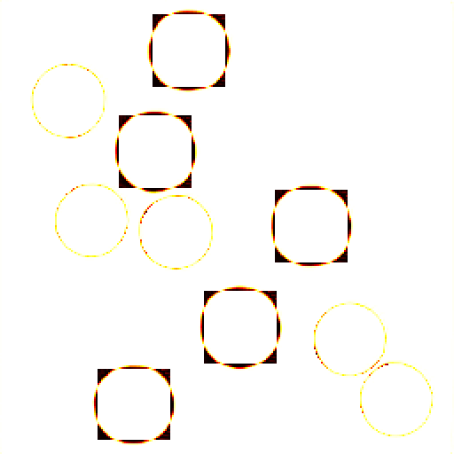

deep-learning-in-computational-mechanics
Code for the textbook.
Accelerating and improving simulations with modern AI methods.
Neural optimization reparametrizes the design variables, such as the pixels in topology optimization, with a neural network. Instead of optimizing the design variables directly, the network predicts them, and its weights are optimized.
In structural optimization, this finds better optima.


In inverse problems, it yields regularized solutions.


And with prior knowledge through transfer learning, optimizations become faster.
Generative models can serve as anomaly detectors: a structure that the model cannot generate is flagged as an anomaly.
Normal data


Anomalous data


Neural networks can represent almost anything efficiently.
Getting them to do so is challenging, though, particularly in mechanics. Our methodological review gives an overview. To learn about these methods, we provide our textbook, in its first and second edition, and the neuralmech platform, with an accompanying book draft that is available on request.
Code for the textbook.
Machine learning enhanced solvers and optimizers.
Learns on the mesh graph to invert wave measurements for unknown material fields.
CodeReplaces the return-mapping step of plasticity with small, reliable learned surrogates.
CodeReuses networks trained on earlier reconstructions to shorten new inversions.
CodeA methodological survey of where deep learning has, and has not, proven useful in mechanics.
Uses a neural reparametrization of the design field to escape poor local optima.
CodeFlags anomalous prints and tracks properties from process data using a GAN.
DataDiscovers neural reparametrizations for regularization in inverse problems.
Reconstructs defects in bonded multi-layer composites from ultrasonic signals with a fully convolutional network.